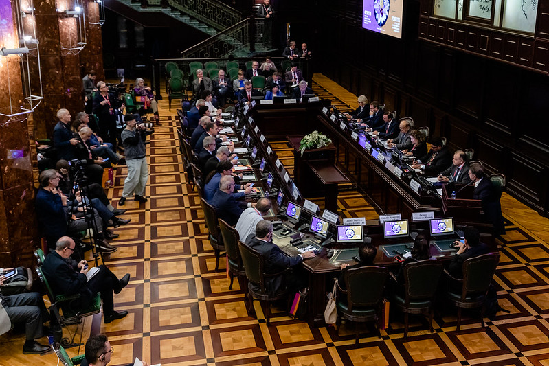
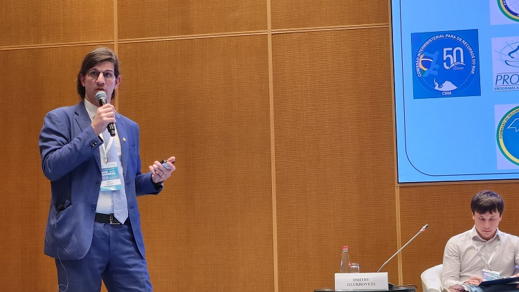
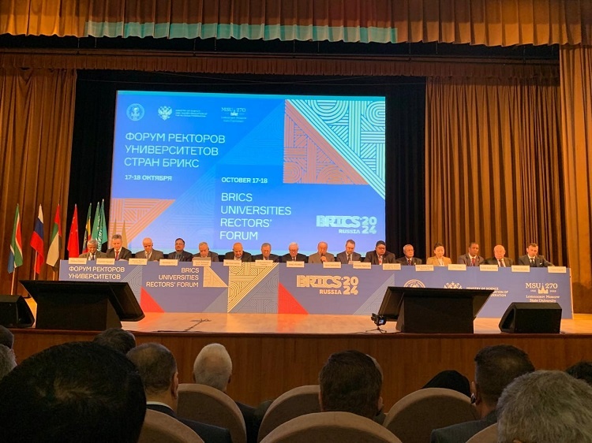

Em Avanço para a diplomacia científica, reitor da FURG firma parcerias e abre caminhos para mais colaborações internacionais.
O reitor da Universidade Federal do Rio Grande (FURG), Danilo Giroldo, desempenhou uma série de ações estratégicas para a internacionalização da instituição durante a missão acadêmica promovida pela Embaixada Brasileira na Rússia, realizada de 14 a 21 de outubro. Durante os sete dias em Moscou, o reitor consolidou etapas essenciais para a internacionalização da universidade, como a assinatura de um acordo de cooperação com o Shirshov Institute of Oceanology da Academia Russa de Ciências, a participação do Fórum de Reitores das Universidades dos países BRICS e a formalização da Liga das Universidades Belarussas, Brasileiras e Russas.
No dia 16 de outubro, foi formalizada a criação da Liga das Universidades Belarussas, Brasileiras e Russas, uma associação informal e voluntária que reúne 67 Instituições de Ensino Superior, das quais 20 são brasileiras. O objetivo desta liga é fortalecer a cooperação acadêmica entre os países, promovendo o desenvolvimento de pesquisas conjuntas, o intercâmbio de conhecimento e a formação de redes de colaboração em áreas estratégicas.
A proposta inicial da Liga é promover estudos conjuntos, programas de mobilidade acadêmica e iniciativas de cooperação por meio da formação de 12 grupos temáticos de colaboração, denominados clusters setoriais. Segundo Giroldo, a iniciativa é um grande avanço para a diplomacia científica e incentivará parcerias em diversas áreas de interesse global, com destaque para a pesquisa polar e oceanográfica, ciências sociais aplicadas e a inovação tecnológica.
A formalização da Liga colabora para a criação de uma rede internacional sólida, onde as universidades podem unir esforços para enfrentar desafios globais por meio da ciência e da educação. A criação do Fórum de Reitores da Liga surge como um dos principais canais de diálogo e decisão, garantindo que as ações estejam alinhadas com as prioridades e os interesses das instituições participantes.

Foto: Divulgação
No dia seguinte à formalização da Liga, mais um passo em direção à internacionalização foi consolidado. O acordo de cooperação com o Shirshov Institute of Oceanology da Academia Russa de Ciências foi assinado na Embaixada brasileira em Moscou no dia 17 de outubro. Segundo o reitor, a assinatura deste acordo de cooperação é estratégico para a FURG, visto que o instituto Shirshov é o maior centro de pesquisa russo na área de oceanologia. A parceria beneficiará estudos em andamento, como também integrará bases de dados para uma melhor compreensão de fenômenos oceanográficos, área de extrema importância para a universidade brasileira.
O acordo possibilita a criação de intercâmbios, incluindo a mobilidade de alunos e professores, colaboração em projetos de pesquisa e participação conjunta em eventos acadêmicos. Além disso, possibilitará o desenvolvimento de programas de dupla-diplomação, ampliando as oportunidades para alunos e pesquisadores, entre outras atividades de cooperação.
A viagem promovida pela Embaixada brasileira na Rússia estreitou as relações acadêmicas e científicas entre o Brasil e os demais países do BRICS. Durante a missão, foi realizada a primeira edição do Fórum de Reitores do BRICS, sediada na Universidade Estatal de Moscou Lomonosov. O evento focou no papel fundamental das universidades no desenvolvimento de tecnologias inovadoras para enfrentar desafios globais urgentes, como as mudanças climáticas, a soberania digital e o avanço de soluções tecnológicas.
Ao longo do Fórum, o reitor teve a oportunidade de destacar os pontos de destaque da FURG, como a relevância das pesquisas brasileiras em ciência polar e oceanografia. A participação ativa em uma Mesa Bilateral Brasil-Rússia sobre Educação Superior, que contava com a presença da alta gestão da Universidade Federal Sirius e do Sirius Federal Territory, permitiu a apresentação da universidade para um ambiente receptivo para atuação em pesquisas em conjunto nas áreas voltadas para as mudanças climáticas.

Foto: Divulgação
Durante um encontro no Ministério de Negócios Estrangeiros da Rússia, ele destacou o trabalho da universidade nas áreas de ciência polar e oceanográfica, além de propor caminhos para cooperações internacionais futuras. Presidida pelo Embaixador russo para questões do Ártico, a reunião contou com a participação de outras figuras relevantes, incluindo Alexander Makarov, diretor do Instituto de Pesquisa do Ártico e Antártico da Rússia, além de representantes de universidades russas com experiência em pesquisas polares.
Ainda, em um Congresso BRICS sobre mudanças climáticas realizado em Sochi, Giroldo pôde apresentar um trabalho com contribuições da FURG sobre os impactos das mudanças climáticas em ecossistemas polares e subtropicais. O destaque da Universidade nessa iniciativa deve-se à sua expertise amplamente reconhecida e respeitada internacionalmente nas áreas de pesquisa marinha e polar. O reitor entende este encontro como um de extrema importância, devido ao diálogo com os demais países do grupo, que gerou a apresentação de soluções de demais países, como também pela oportunidade da FURG de ser uma das representantes do Brasil na discussão.

Foto: Divulgação
A missão acadêmica e científica na Rússia foi concluída em 21 de outubro, mas seus benefícios serão sentidos por um longo período. O reitor reconhece que as ações desta jornada foram cruciais para abrir portas para a FURG e a internacionalização no futuro. A partir de novembro, grupos de pesquisa da FURG serão contatados para iniciar o desenvolvimento de futuras parcerias.
FURG Establishes International Partnerships During Academic Mission in Russia
A Step Forward for Scientific Diplomacy, FURG's Rector Forms Partnerships and Opens Pathways for More International Collaborations
The Rector of the Federal University of Rio Grande (FURG), Danilo Giroldo, carried out a series of strategic actions to internationalize the institution during an academic mission organized by the Brazilian Embassy in Russia, held from October 14 to 21. During the seven days in Moscow, the rector consolidated essential steps for the university’s internationalization, such as signing a cooperation agreement with the Shirshov Institute of Oceanology of the Russian Academy of Sciences, participating in the BRICS University Rectors’ Forum, and formalizing the League of Belarusian, Brazilian, and Russian Universities.
On October 16, the creation of the League of Belarusian, Brazilian, and Russian Universities was officially announced. This informal and voluntary association brings together 67 higher education institutions, 20 of which are Brazilian. The aim of the League is to strengthen academic cooperation among the countries, fostering the development of joint research, the exchange of knowledge, and the formation of collaboration networks in strategic areas.
The League's initial proposal is to promote joint studies, academic mobility programs, and cooperation initiatives through the formation of 12 thematic collaboration groups, known as sectoral clusters. According to Giroldo, the initiative is a significant step forward for scientific diplomacy and will encourage partnerships in various areas of global interest, with a particular focus on polar and oceanographic research, applied social sciences, and technological innovation.
The formalization of the League contributes to the creation of a solid international network where universities can unite efforts to tackle global challenges through science and education. The creation of the League’s Rectors’ Forum emerges as one of the main channels for dialogue and decision-making, ensuring that actions are aligned with the priorities and interests of the participating institutions.
The following day, another milestone in the internationalization process was achieved. A cooperation agreement with the Shirshov Institute of Oceanology of the Russian Academy of Sciences was signed at the Brazilian Embassy in Moscow on October 17. According to the rector, the signing of this cooperation agreement is strategic for FURG, as the Shirshov Institute is the largest research center in Russia for oceanology. The partnership will benefit ongoing studies and integrate databases for a better understanding of oceanographic phenomena, a field of great importance to the Brazilian university.
The agreement will enable exchanges, including the mobility of students and faculty, collaboration on research projects, and joint participation in academic events. Additionally, it will facilitate the development of double-degree programs, expanding opportunities for students and researchers, among other cooperative activities.
The mission organized by the Brazilian Embassy in Russia strengthened academic and scientific ties between Brazil and other BRICS countries. During the mission, the first edition of the BRICS Rectors' Forum was held at Lomonosov Moscow State University. The event focused on the crucial role of universities in developing innovative technologies to address urgent global challenges, such as climate change, digital sovereignty, and the advancement of technological solutions.
Throughout the Forum, the rector had the opportunity to highlight FURG’s strengths, such as the relevance of Brazilian research in polar science and oceanography. Active participation in a Brazil-Russia Bilateral Roundtable on Higher Education, which included senior management from the Federal University of Sirius and the Sirius Federal Territory, allowed FURG to present itself to a receptive environment for joint research in areas related to climate change.
During a meeting at the Russian Ministry of Foreign Affairs, the rector emphasized the university’s work in polar and oceanographic sciences, as well as proposing pathways for future international cooperation. Presided over by the Russian Ambassador for Arctic Affairs, the meeting also included other prominent figures, such as Alexander Makarov, director of the Russian Arctic and Antarctic Research Institute, as well as representatives from Russian universities with expertise in polar research.
Additionally, at a BRICS Congress on climate change held in Sochi, Giroldo presented work contributed by FURG on the impacts of climate change on polar and subtropical ecosystems. The university’s prominence in this initiative stems from its internationally recognized expertise in marine and polar research. The rector considers this meeting extremely important due to the dialogue with other BRICS countries, which resulted in the presentation of solutions from various nations, as well as the opportunity for FURG to represent Brazil in the discussion.
The academic and scientific mission in Russia concluded on October 21, but its benefits will be felt for a long time. The rector recognizes that the actions taken during this journey were crucial in opening doors for FURG and its internationalization in the future. Starting in November, FURG research groups will be contacted to begin developing future partnerships.